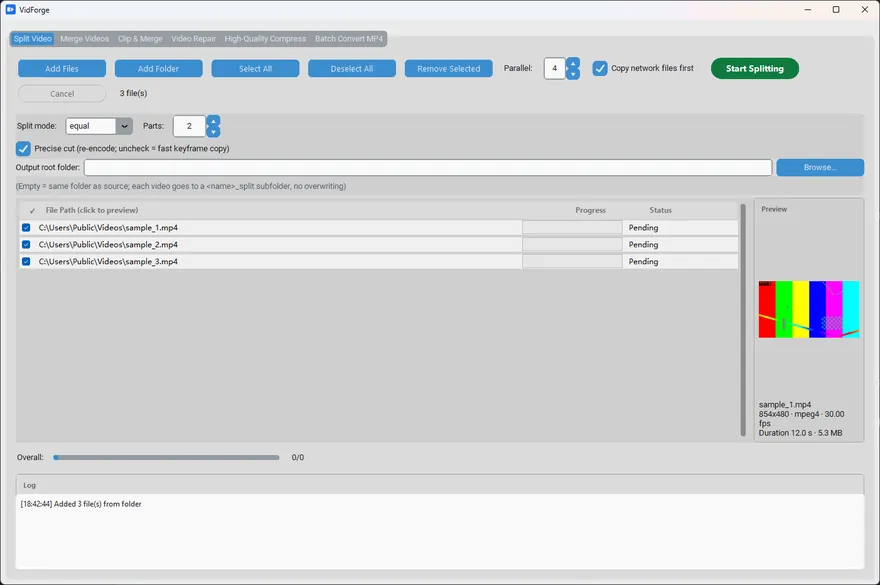

Nueve clips a MP4 en cinco segundos — sin abrir nueve cuadros de diálogo.
La mayoría de las apps de vídeo están pensadas para un clip a la vez: elegir un archivo, elegir un preajuste, elegir un nombre de salida, esperar, repetir. VidForge está pensado para la carpeta. Suelta un lote completo, define la carpeta de salida una sola vez, y decide por archivo qué necesita trabajo de verdad — copia de flujo cuando el códec ya encaja, recodificación real solo cuando no — mientras cuatro archivos se ejecutan en paralelo detrás de una sola barra de progreso.
Convertir, reparar, comprimir, recortar, fusionar, dividir. Las mismas reglas, la misma cola, el mismo registro.
Prueba gratuita de 7 días con todas las herramientas desbloqueadas — luego un pago único de 2,99 $. Sin cuenta, sin marca de agua, sin cuota de subida, y los vídeos nunca salen de tu PC. Pensado para quienes procesan carpetas: material de móvil y cámara de acción, grabaciones de pantalla, descargas a medias, streams largos que hay que partir en capítulos.

Las apps de edición optimizan un clip. Los lotes son otro problema
Un lote no es «el mismo trabajo, repetido». Es una cola de entradas mezcladas: algunos archivos ya son H.264, otros son HEVC de un móvil, uno es un contenedor con el final roto, tres hay que unirlos, y todos deben acabar en la misma carpeta con nombres sensatos. Delegarlo en un editor de línea de tiempo significa hacer a mano la parte aburrida — la gestión de archivos — un cuadro de diálogo cada vez.
🗂 El impuesto de los cuadros de diálogo
Exporta una carpeta de 20 clips desde un editor típico y confirmas veinte veces el mismo preajuste, el mismo bitrate y la misma carpeta de salida. VidForge pregunta una vez, para toda la cola.
⏳ Recodificar lo que nunca lo necesitó
La mitad de un lote típico ya está en el formato objetivo. VidForge comprueba primero el códec y copia el flujo esos archivos — un clip de 45 segundos llega en menos de un segundo, idéntico bit a bit.
🧊 Esperar a un solo núcleo
Una exportación cada vez deja la máquina ociosa. La cola ejecuta de 1 a 8 trabajadores en paralelo con progreso por archivo, estado por archivo y un solo botón de cancelar compartido.
Qué significa de verdad «basado en reglas»
Cada pestaña es un conjunto de reglas, no un asistente: qué archivos, qué hacer con cada uno, a dónde va el resultado y qué hacer cuando la entrada no es ideal. Nada se decide en silencio — el registro imprime la decisión tomada para cada archivo.
| Tarea | La regla que aplica VidForge |
|---|---|
| Convertir | H.264 dentro de un contenedor compatible con MP4 → copia de flujo. HEVC u otra cosa → recodificar solo ese archivo. Audio que no decodifica → reintentar solo vídeo en vez de fallar el lote. |
| Comprimir | Estimar bits por píxel según resolución y velocidad de fotogramas. Si el archivo tiene menos de ~10 % de margen, se omite — recodificar solo costaría tiempo y calidad. |
| Fusionar | Comparar códec, resolución, velocidad (±0,01) y formato de píxel. Coinciden → concatenación sin pérdida. No coinciden → recodificar para que la unión siga funcionando. |
| Recortar | Extraer cada segmento por copia de flujo, recurrir a recodificación por segmento y luego concatenar — recodificación completa solo si la vía de copia falla por completo. |
| Reparar | Reconstruir el índice del contenedor por copia de flujo. Recodificar solo cuando las marcas de tiempo no tienen salvación. |
| Dividir | Partes iguales por número; o un corte preciso recodificado, o una copia rápida por fotogramas clave en una subcarpeta por vídeo — sin sobrescribir nunca la fuente. |
Características principales
Seis herramientas, más la maquinaria de cola que las hace utilizables sobre una carpeta en vez de un archivo.
⇄ Conversión por lotes a MP4
Añade archivos o una carpeta entera, elige una carpeta de salida una vez y convierte la cola con copia inteligente / recodificación. El material HEVC de móvil se convierte en H.264 reproducible en todas partes sin tocar los clips que ya estaban bien.
🛠 Reparación de vídeo
Dale el resto de una descarga interrumpida — .!qb, .part, .bc!, .xltd, .emule.td — y recupera un MP4 reproducible. Un clip de 45 segundos se repara en cerca de un segundo, por copia de flujo.
🗜 Compresión de alta calidad
Compresión consciente de la calidad con estimación de bits por píxel: los clips que no pueden reducirse se omiten en vez de dañarse. Control manual de tamaño, bitrate, CRF o NVENC CQ — y un resumen del lote al final.
✂ Recorte y fusión
Conjuntos de segmentos independientes para muchos archivos a la vez, entrada compacta de tiempos (0101 = 00:01:01), reordenar arrastrando, alineación por fotogramas clave, respaldo por GPU e importación / exportación JSON para que un corte repetible sea un preajuste reutilizable.
⇉ Fusionar vídeos
Une grabaciones en un archivo en el orden que fijes, con número de repeticiones, nombre de salida personalizado, contenedor mp4 / mkv / mov, HEVC por CPU opcional y todos los flujos de audio y subtítulos conservados al copiar.
⧉ Dividir vídeo
División por número de partes con preajustes, corte preciso opcional y subcarpetas automáticas <name>_split para que una grabación larga pueda partirse en capítulos sin colisiones.
⚡ Trabajadores en paralelo
De 1 a 8 archivos a la vez detrás de una única cola y una única barra de progreso. Estado por archivo (En cola / Convirtiendo / Hecho / Omitido) y un Cancelar que detiene todo el lote limpiamente.
🧠 Modo inteligente
Copiar cuando se puede, recodificar solo cuando hace falta, elegir el códec que encaja con el objetivo y conservar el original cuando una pasada de compresión no ganaría nada.
🔒 Sin conexión y privado
FFmpeg incluido, sin telemetría, sin llamadas de red, sin cuenta. Los registros quedan en %LOCALAPPDATA%. Consulta la Política de privacidad.
Véalo en acción
Una única sesión sin guion: nueve clips mezclados convertidos, cuatro archivos comprimidos, tres clips fusionados y una descarga rota reparada. El reloj del registro es real — sin aceleración, solo se recortan las pausas entre pasos.
Nueve archivos, cuatro a la vez
Los clips H.264 se copian por flujo, el único clip HEVC se recodifica, la cola se vacía en unos cinco segundos.
Compresión que sabe cuándo parar
Cuatro clips de entrada, 2,86 MB → 1,85 MB de salida — y el resumen te dice el ahorro exacto por archivo.
Descarga rota, reparada
Un residuo <code>.mp4.!qb</code> se convierte en un MP4 reproducible por copia de flujo — el metraje intacto nunca se recodifica.
Cómo funciona
Cuatro pasos, y solo los dos primeros cambian por lote.
Tutorial paso a paso
Cada pestaña en el orden en que la usarías, de una carpeta desordenada a los archivos terminados.

<name>_split.

00:10–00:25 o en la forma compacta 0101. Reordena arrastrando, mantén la alineación por fotogramas clave para ganar velocidad y exporta todo el conjunto en JSON para reutilizarlo en el siguiente lote.

.!qb / .part / .bc! y pulsa Reparar selección. El estado pasa a Reparado (copia de flujo); el registro confirma la ruta y el tamaño de salida. Usa Copiar primero archivos de red si la fuente está en un NAS.Casos de uso reales
Donde el procesamiento por lotes ahorra una tarde, no un minuto.
📱 Material de móvil y cámara de acción
Los iPhones y los tope de gama Android recientes graban en HEVC. Una carpeta de clips de vacaciones se convierte en una carpeta de MP4 H.264 que se reproduce en todas partes — TV, autoradio, un editor antiguo — y los archivos ya en H.264 pasan intactos.
🧲 Descargas a medias
qBittorrent deja <code>.!qb</code>, eMule deja <code>.part</code>, los navegadores dejan hermanos <code>.crdownload</code>. Si el vídeo en sí estaba casi completo, ese resto es recuperable — la app reconstruye el índice y conservas el metraje.
🎥 Grabaciones de pantalla y streams
OBS y las herramientas de captura producen archivos de 2–4 GB que hay que partir en capítulos. Divide por partes, o recorta los segmentos interesantes de una docena de grabaciones en una pasada con un preajuste JSON.
🗄 Compresión de archivos
Las grandes bibliotecas MP4 suelen tener un 20–40 % de bitrate desperdiciado. La estimación bpp comprime lo que tiene margen, omite lo que no, y muestra un resumen total «35 % ahorrado» para que sepas que valió la electricidad.
🎬 Grabaciones en varias partes
Las cámaras que se detienen a los 4 GB, o las grabaciones repartidas entre sesiones, se vuelven a unir en un archivo sin recodificar cuando los parámetros coinciden — la calidad del original, un solo archivo de salida.
🏫 Material de cursos y reuniones
Un semestre de grabaciones de clases: comprime las pesadas, fusiona las sesiones en dos partes, divide las de tres horas por tema y mantén cada nombre de salida previsible.
Preguntas frecuentes
¿VidForge es gratis?
Los primeros 7 días, sí — la ficha de Microsoft Store incluye una prueba gratuita de 7 días con todas las herramientas desbloqueadas. Después es un pago único de 2,99 $: sin suscripción, sin cuenta, sin marca de agua y sin cuota de subida.
¿Sube mis vídeos a algún sitio?
No. Todo el procesado ocurre en una versión de FFmpeg incluida en la app, en tu máquina. No hay telemetría ni acceso a la red en absoluto — consulta la Política de privacidad.
¿Por qué la conversión por lotes es tan rápida?
Porque la mayor parte del trabajo se omite. Los archivos que ya están en un flujo compatible con MP4 se copian por flujo — sin decodificar, sin codificar, sin cambio de calidad — y solo las conversiones genuinas se recodifican, en paralelo. Nueve clips mezclados terminaron en unos cinco segundos en la demo de arriba.
¿Sobrescribirá o modificará mis originales?
Nunca. Los resultados se escriben en la carpeta de salida que elijas; si la dejas vacía, cada resultado se escribe junto a su fuente, y las divisiones siempre crean una subcarpeta por vídeo. Tus archivos fuente solo se leen.
¿Puede reparar un vídeo descargado a medias?
Normalmente sí — siempre que los bytes descargados contengan un flujo legible. VidForge reconstruye el índice del contenedor por copia de flujo, recurriendo a la recodificación si las marcas de tiempo no tienen salvación. Solo puede recuperar lo descargado realmente: un archivo que se detuvo al 30 % se reproducirá por un 30 % de su duración.
¿Fusionar recodifica y pierde calidad?
Solo cuando las entradas discrepan. VidForge compara códec, resolución, velocidad (con tolerancia de ±0,01) y formato de píxel; si coinciden, los archivos se concatenan tal cual, así que la salida es el mismo vídeo bit a bit. Las entradas discrepantes se recodifican para que el resultado siga reproduciéndose.
¿Necesito instalar FFmpeg?
No. FFmpeg y ffprobe vienen incluidos en la app. No se añade nada a tu PATH y no se descarga nada en tiempo de ejecución.
¿Es compatible con HEVC / H.265 y NVENC?
Sí. En modo inteligente el H.264 se copia y el HEVC se recodifica a H.264 por compatibilidad. El NVENC por hardware se detecta automáticamente para compresión y codificaciones de respaldo, y el x265 por CPU está disponible como opción.
¿Puedo usarlo en un portátil sin GPU dedicada?
Sí. La codificación por hardware es opcional — la app recurre a libx264 / libx265. La copia de flujo y la reparación no necesitan codificador alguno, así que funcionan a toda velocidad en gráficos integrados.
¿Cuáles son los requisitos del sistema?
Windows 10 o Windows 11, 64 bits. Unos 200 MB de disco para la app y su versión de FFmpeg. No se requiere GPU; una tarjeta NVIDIA dedicada simplemente acelera la compresión.
¿Cómo obtengo ayuda?
Escribe a 30329277@qq.com con la versión de la app y, si puedes, las últimas líneas del panel de registro. El tiempo de respuesta habitual es de 24 a 48 horas.
Requisitos del sistema
| Sistema | Windows 10 / Windows 11, 64 bits |
| Disco | ~200 MB para la app y la versión de FFmpeg incluida, más espacio para tus salidas |
| GPU | Opcional. Se usa NVENC si está presente; si no, x264 / x265 por CPU |
| Red | No se necesita en absoluto — salvo si tus archivos fuente están en un NAS (usa <i>Copiar primero archivos de red</i>) |
| Entrada | MP4, MOV, MKV, AVI y cualquier otra cosa que el FFmpeg incluido pueda decodificar — descargas parciales incluidas |
Consigue la app
VidForge ya está disponible en Microsoft Store para Windows 10 y 11 (64 bits). La prueba gratuita de 7 días es la app completa — todas las herramientas desbloqueadas, sin marca de agua, sin límites — y al terminar puedes conservarla con una compra única de 2,99 $, pagada una vez, sin suscripción. La ficha muestra capturas, requisitos del sistema y el precio en tu moneda; la Política de privacidad está publicada aquí en este sitio.
Windows 10 / 11 · 64 bits Prueba gratuita de 7 días 2,99 $ pago único FFmpeg incluido Sin cuenta